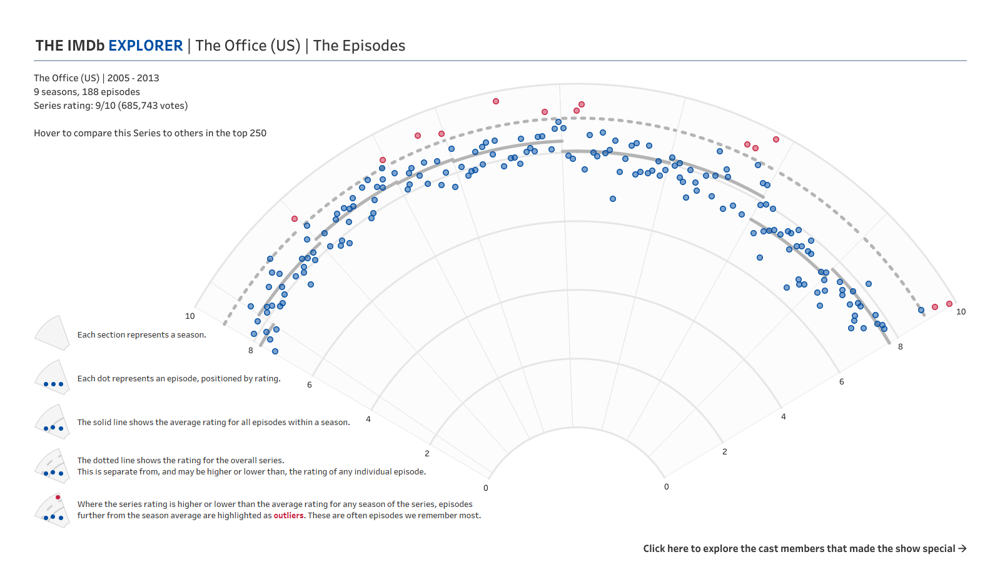
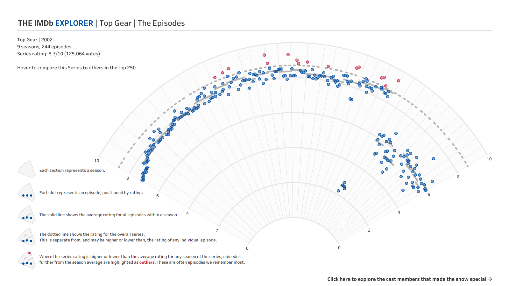
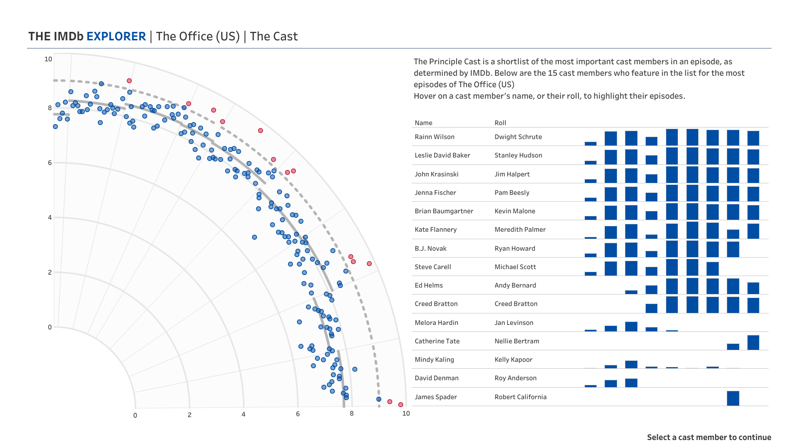
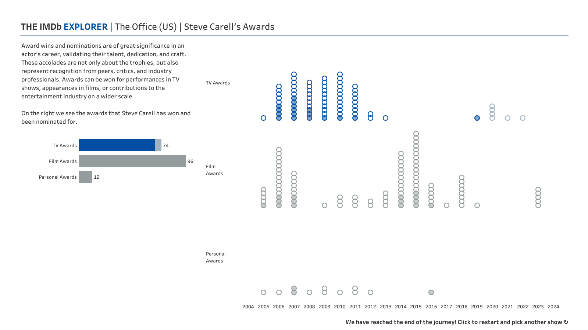

Iron Viz - the world’s preeminent data visualisation competition, and a competition that I am proud to have conquered as the 2024 Global Champion. Entrants to the competition are challenged to build a dashboard that will be judged against three criteria: analysis, design, and storytelling. In this post I am going to be taking you through the analysis I conducted in my final winning visualisation: The IMDb Explorer.
For the first time, in the lead up to the 2024 Qualifier submission deadline Tableau released details of the judging criteria used for Iron Viz. Although the judging process is different in the final, I decided to use this as a rule of thumb when developing my entry for the final. I hope that how I approached the data with this in mind will be helpful for you in looking to be a better Tableau analyst, and maybe even when entering Iron Viz in 2025.

Analysis is a fundamental part of what we do with Tableau, and a main thing that adds value to our work when we take a raw data file and convert it into charts. A lot of the time, especially with vizzes that end up on Tableau Public, we aren’t there to take our users through our creation but need to give them the tools they need to understand it themselves. With a topic like TV data, I wanted to give people the freedom to pick a path of analysis that resonated with them. This meant the analysis in the dashboard is a little hidden, but the tools are there to enable the uncovering of some great insights within this incredible dataset.
Analysis in the Scatter Plot

The first thing that you see when opening the dashboard is this scatterplot, positioning 250 dots based on the IMDb Series Rating and Number of Votes, as well as sizing the dots by Number of Votes. As we will see is a common theme throughout this dashboard, the set-up of this chart allows the user to conduct their own analysis. The vertical axis and size of dots can be changed using parameter drop downs to show the Number of Seasons, Number of Episodes, or Years Running instead of the Number of Votes. This allows for many insights to be found on this chart alone. Which shows stand out as having the most votes? Which shows have been running the longest? Do shows with the most seasons also have the highest number of episodes? The chart can also be filtered by IMDb Series Rating, allowing you to zoom in on shows with the highest (or lowest) ratings.
Analysis in the Radial Chart
The radial chart was very much the central aspect of my dashboard, taking the most amount of time both in the prep stages and building it in the final. The reaction that this chart had in the final, and the weeks since, justified the decision to include it, but there is also a large amount of analytical detail involved here.

In the excitement of the radial chart, a subtle addition has been largely missed. Tucked away in the text in the top left corner is a viz contextualising the performance of the selected TV show. With this chart we are reminded of how the Series Rating for this show compares with the other 249 shows included on the home page. I also used Tableau’s built in capability to calculate standard deviations to use a mathematical technique of identifying outliers within the data. I really don’t think reference lines get enough love in Tableau – they are a powerful tool that enables deeper analysis and callouts of important information in a viz.
That detour aside, onto the radial itself… Here we see a combination of two metrics given to us in the data: the Series Rating, and the Episode Rating. Ratings on IMDb are submitted by users, and can be submitted for an individual episode or the show as a whole. The two scores have no direct bearing on each other, so the series rating could in theory be quite different to the rating of individual episodes. In addition to using these two, I also created a metric that isn’t directly available on IMDb - the Season Rating. This is simply the average rating of all episodes within one season.
Comparing the season rating with the overall series rating gives us a clear indication of episodes that overperform the show as a whole. You would expect that the series rating would be in the same region as the season averages, but this is not always the case. Taking The Office as an example, the series rating (9.0) is higher than the average rating of episodes in each season for all seasons (ranging from 7.4 to 8.4). When I noticed this, it made me question what it was that made the overall rating higher than the rating of each season. That is where the outlier idea came from. These episodes that are highlighted in red are the ones that I think pull the series rating higher. They are episodes that we remember, and that leave us with a very distinct feeling after watching them.
If I were to create this chart again, would I do it differently? Possibly. The notion of outliers is a confusing one. If we look at Top Gear, we see instantly that the ratings dropped in Season 23 before climbing back to a new average around the 6 out of 10 mark. In any other analysis you would expect that Season 23 drop to be highlighted as an outlier but here it doesn’t fit the criteria for an outlier that I settled on. Changing this definition would have changed the chart for The Office, which would have changed how I could tell the story I told on stage… And we’ll come to that in a few weeks!

Analysis in the Cast Focus



Bringing in the cast data was the part of this dashboard that I struggled with the most. The notion of “principle cast” in IMDb data takes a while to wrap your head around. IMDb creates a list of the most important cast members in any episode of a TV show, and only includes these people in the principle cast list. There seemed to be some strange omissions here – in The Office, Angela only features in the list for 12 episodes whereas she is in the credits for far more episodes than that! To get around this, I limited the data to include only the 15 most featured cast members. For these cast members you can see the number of episodes they feature in the list for by season. The episodes on the radial are highlighted when you hover on the cast members which is useful for finding trends in the data and calling out a little bit of analysis.
After selecting a cast member, you can see all of the TV episodes they feature in from the entire dataset (not just the 250 most voted for shows). The main analytical feature here is, again, highlighting trends. Did featuring in one show lead to a booming career later on? Did they go missing after their time on a show came to an end? Were they a one show wonder? The analytical tool is here, in part at least, to answer all of these questions.
The final step in the Explorer’s journey is the awards that the chosen cast member has won or been nominated for. This sees a series of dots, filled or unfilled, stacked by year. I had been staring at the awards table in our dataset for some time before I realised the analytical power that was here, beyond just trends in when TV shows an actor appears in were the most successful. Included in this table were a number of columns: a name identifier to link it to the person, the award name, the award year, whether the award had been won or not, a unique reference for the IMDb record the award was for, and so many more. It is that last field that played a vital role in the analytical value of this final chart. Not all of the “title id”s matched with a TV show. There were many that did, but also many that didn’t, and an extra group of rows that didn’t have a title id at all. A quick search showed me that all of the title ids that didn’t match to the rest of the data were in fact films. I couldn’t say what films they were in the Viz, but it did help to identify the progression of an actor’s career. I’m not sure whether the awards table will be released with the same data when Tableau launches Data+TV later this year. I hope it is. In any case, it would be great to see this viz expanded to include the names of the films as well as just the fact that they exist.
//
So there you have it. A little insight to how I approached the analysis aspect of the IronViz final. Much of it crosses over with the storytelling, but I hope there is something in this that you can take to your own work to improve how you approach analysing a very large dataset. Next week, I’ll be sharing some thoughts around the design of The IMDb Explorer. Be sure to check it out!
Take care // Chris